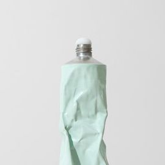
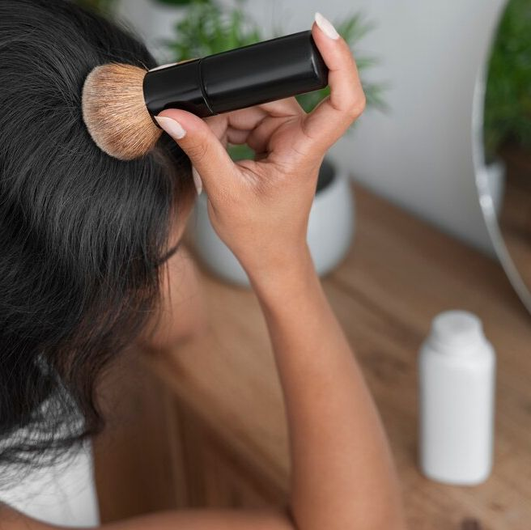

Rengøring
Ceramic cleaner
Kan anvendes på alle keramiske overflade til at fjerne snavs og kalk
Kan købes hos:
Eco cleaning , Wubi.com,
Eco cleaning , Wubi.com,
Rengøringssæt - badeværelse
Rengøringssæt til rengøring af badeværelse
Kan købes hos:
KL Vask, Home, GreenClean, GoCoEco
KL Vask, Home, GreenClean, GoCoEco

Kalkfjerner
Anvendes til fjernelse af genstridige kalkaflejringer
Kan købes hos:
KL Vask, GreenClean, Tamas
KL Vask, GreenClean, Tamas
Personlig pleje

Tørshampoo
Fordeles i håret for at absobere fedt
Kan købes hos:
Tamas, Pea Health, ECOOK
Tamas, Pea Health, ECOOK

Ansigtsrens - fuldt sæt
Anvendes til at fjerne make-up og vaske ansigt
Kan købes hos:
GoCoEco, Hannes
GoCoEco, Hannes